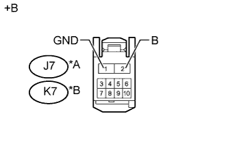

DTC B2322 Прекращение обмена данными с ЭБУ двери переднего пассажира |
| Код DTC | Условие обнаружения DTC | Неисправный участок |
| B2322 | Прекращение обмена данными между электродвигателем стеклоподъемника правой*1 или левой*2 передней двери и главным ЭБУ кузова (бортовым ЭБУ сети мультиплексной связи) в течение 10 с или более. |
|
| 1.УДАЛИТЕ DTC |
Сбросьте коды DTC (Нажмите здесь).
| ДАЛЕЕ | |
| 2.ПРОВЕРЬТЕ DTC |
Проверьте коды DTC (Нажмите здесь).
|
| ||||
| OK | ||
| ||
| 3.ПРОВЕРЬТЕ ЖГУТ ПРОВОДОВ И РАЗЪЕМ (ГЛАВНЫЙ ЭБУ КУЗОВА - ЭЛЕКТРОДВИГАТЕЛЬ ПЕРЕДНЕГО СТЕКЛОПОДЪЕМНИКА) |
Снимите главный ЭБУ кузова (бортовой ЭБУ сети мультиплексной связи) с распределительного блока со стороны водителя в сборе (Нажмите здесь).
Отсоедините разъем J7*1 или K7*2 электродвигателя стеклоподъемника передней двери.
Измерьте сопротивление в соответствии со значениями, приведенными в таблице ниже.
| Контакты для подключения диагностического прибора | Условие | Заданные условия |
| A-16 (LIN2) - J7-9 (LIN) | Всегда | Менее 1 Ом |
| A-16 (LIN2) или J7-9 (LIN) - масса | Всегда | 10 кОм или более |
| Контакты для подключения диагностического прибора | Условие | Заданные условия |
| A-16 (LIN2) - K7-9 (LIN) | Всегда | Менее 1 Ом |
| A-16 (LIN2) или K7-9 (LIN) - масса | Всегда | 10 кОм или более |
|
| ||||
| OK | |
| 4.ПРОВЕРЬТЕ ЖГУТ ПРОВОДОВ И РАЗЪЕМ (ЭЛЕКТРОДВИГАТЕЛЬ СТЕКЛОПОДЪЕМНИКА ПЕРЕДНЕЙ ДВЕРИ - АККУМУЛЯТОРНАЯ БАТАРЕЯ И МАССА) |
|  |
Отсоедините разъем J7*1 или K7*2 электродвигателя стеклоподъемника передней двери.
Измерьте сопротивление в соответствии со значениями, приведенными в таблице ниже.
| Контакты для подключения диагностического прибора | Режим | Заданные условия |
| J7-1 (GND) - масса | Всегда | Менее 1 Ом |
| Контакты для подключения диагностического прибора | Режим | Заданные условия |
| K7-1 (GND) - масса | Всегда | Менее 1 Ом |
Измерьте напряжение в соответствии со значениями, приведенными в таблице.
| Контакты для подключения диагностического прибора | Режим | Заданные условия |
| J7-2 (B) - масса | Всегда | 11-14 В |
| Контакты для подключения диагностического прибора | Режим | Заданные условия |
| K7-2 (B) - масса | Всегда | 11-14 В |
| *A | Для моделей с левосторонним рулевым управлением |
| *B | Для моделей с правосторонним рулевым управлением |
| *a | Вид спереди разъема со стороны жгута проводов: (к электродвигателю стеклоподъемника передней двери в сборе) |
|
| ||||
| OK | |
| 5.ЗАМЕНИТЕ ЭЛЕКТРОДВИГАТЕЛЬ СТЕКЛОПОДЪЕМНИКА ПЕРЕДНЕЙ ДВЕРИ В СБОРЕ |
Временно замените электродвигатель стеклоподъемника правой*1 или левой*2 передней двери новым или исправным (Нажмите здесь).
| ДАЛЕЕ | |
| 6.УДАЛИТЕ DTC |
Удалите коды DTC (Нажмите здесь).
| ДАЛЕЕ | |
| 7.ПРОВЕРЬТЕ DTC |
Проверьте коды DTC (Нажмите здесь).
|
| ||||
| OK | ||
| ||